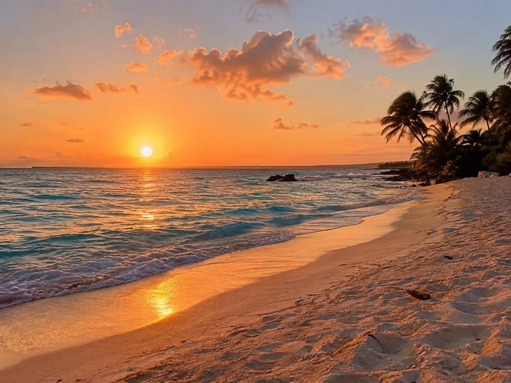
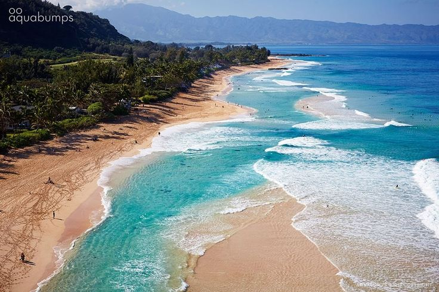
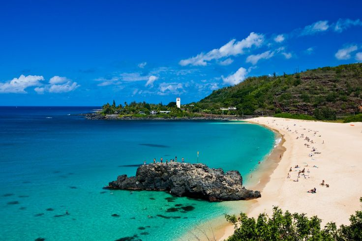

Overview
The North Shore is known for sandy beaches, clear water, and big winter waves. Some days are calm and great for swimming, and other days are best for watching surfers. This page highlights a few famous spots and what each one is known for.
Sunset Beach

Sunset Beach has a long shoreline and great views at the end of the day. Winter swells can bring big surf, and calmer seasons are perfect for walks and relaxing by the water.
More InformationBanzai Pipeline (Ehukai)

Pipeline is one of the most famous surf breaks in the world. Waves break over a shallow reef and form fast barrels. It’s a popular place to watch experienced surfers from the sand.
More InformationWaimea Bay

Waimea Bay is a wide, beautiful beach with a deep blue bay. In summer it can be calm for swimming and snorkeling. In winter the waves can get powerful and the surf is world-famous.
More InformationColor Questions
- What color did you choose to emphasize text? Ocean Blue (#0077b6)
- What color did you choose to de-emphasize text? Gray (#6c757d)
- How did you choose your colors? I used an online color palette tool and selected colors inspired by the ocean and beaches of the North Shore.